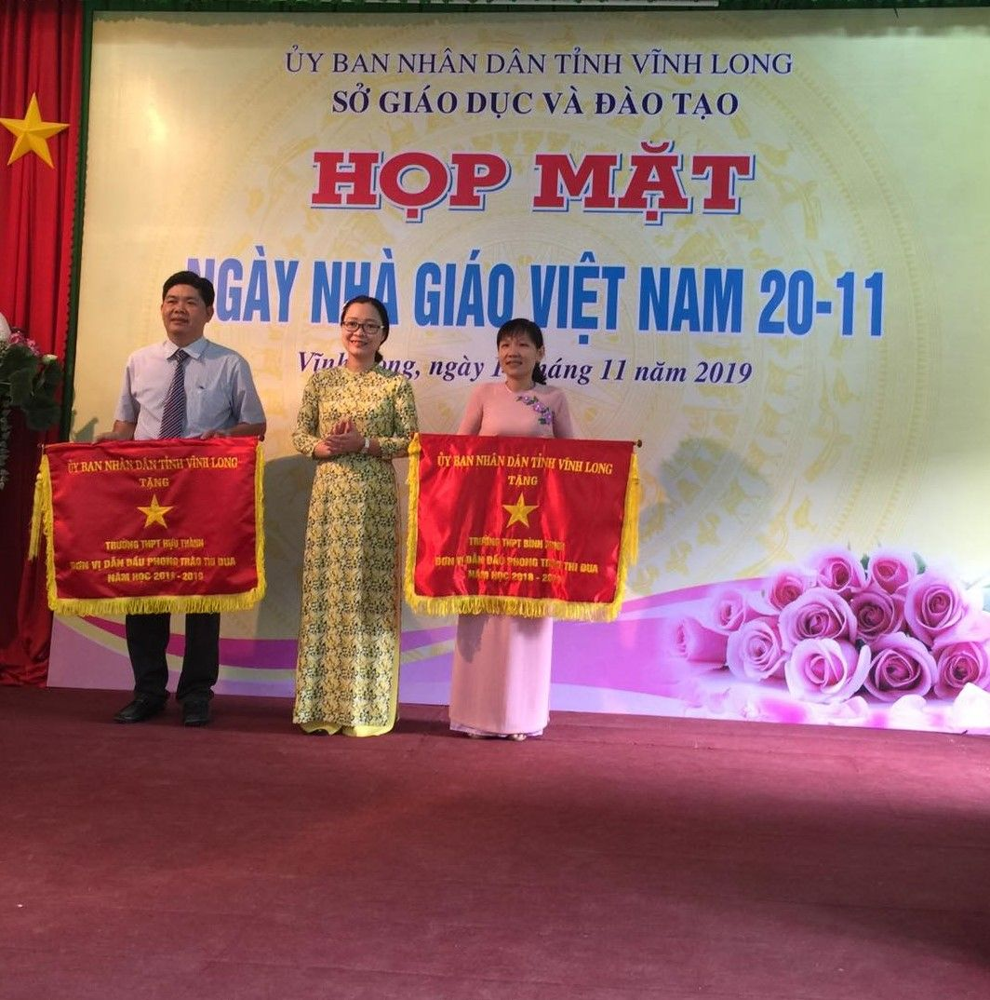

Phát biểu chúc mừng của Giám đốc Sở Giáo dục và Đào tạo nhân ngày Nhà giáo Việt Nam 20/11
Kính thưa quý lãnh đạo, quý đại biểu, quý Thầy giáo, Cô giáo!
Trong không khí vui tươi và ấm áp của buổi họp mặt ngày Nhà giáo Việt Nam hôm nay, thay mặt lãnh đạo Sở Giáo dục và Đào tạo, tôi xin gửi đến quý lãnh đạo, quý đại biểu, quý thầy giáo, cô giáo lời chào trân trọng và lời chúc mạnh khỏe, vui tươi, hạnh phúc.

Kính thưa quý vị lãnh đạo, quý đại biểu cùng với Thầy Cô thân mến!
Theo dòng chảy của lịch sử, hình ảnh người Thầy trong mỗi giai đoạn có những nét riêng nhưng vẫn luôn ấm áp và bình dị. Đó là những ông đồ của thời phong kiến với hình ảnh cây roi trên tay để dạy những bài học đạo đức khuôn thước và chuẩn mực; là hình ảnh người thầy vừa dạy chữ vừa dạy cho trẻ cách trốn bom đạn chiến tranh; là người thầy trong giai đoạn đầu khi xây dựng lại quê hương, không ngại khó khăn đi khắp nơi để gieo con chữ; đất nước bước vào giai đoạn phát triển, nhu cầu cuộc sống được nâng lên thì người thầy cũng được cập nhật tri thức mới, toàn diện hơn về phương pháp sư phạm, kỹ năng nghề nghiệp, sử dụng ngày càng thành thạo các thiết bị dạy học và công nghệ hiện đại.
Ngày 28 tháng 9 năm 1982, Hội đồng Bộ trưởng (nay là Chính phủ) do đồng chí Võ Nguyên Giáp ký quyết định lấy ngày 20 tháng 11 là ngày Nhà giáo Việt Nam.
Đã 37 năm qua, ngày 20 tháng 11 hàng năm đến với thầy cô giáo trong niềm hạnh phúc và sự mong chờ, khơi gợi trong mỗi người niềm tự hào nghề nghiệp với những giá trị được kết tinh từ truyền thống ngàn năm của dân tộc. Không ai sinh ra và lớn lên mà có sẵn tri thức để trưởng thành. Tương lai và hạnh phúc của mỗi người song hành với những mục tiêu mới hơn cao hơn và xa hơn. Để đi đến mục tiêu ấy không thể thiếu sự đồng hành của người Thầy. Vì thế nhà giáo luôn được coi là nghề cao quý, người Thầy được xã hội tôn vinh. Càng cao quý hơn khi người Thầy luôn biết vượt qua khó khăn trong mọi hoàn cảnh để gìn giữ và phát huy truyền thống, nâng cao giá trị nghề nghiệp. Chúng ta có thể tự hào vì thầy cô giáo của ngành Giáo dục Vĩnh Long qua bao thế hệ đã làm được điều đó.
Kính thưa quý vị lãnh đạo, quý đại biểu, quý thầy cô!
Thời gian, không gian mang đến những khoảnh khắc khác lạ; ngày 20 tháng 11 mỗi năm mỗi khác với những lắng đọng rất riêng. Thế nhưng, trong sâu thẳm tâm hồn tôi vẫn đong đầy những cảm xúc như ngày đầu làm cô giáo.
Đó là niềm tự hào. Tự hào vì nghề nghiệp mình đã chọn có vị trí và vai trò nhất định, được xã hội tôn vinh. Thầy không chỉ đánh thức tiềm năng trong mỗi học sinh, khơi dậy và phát triển tri thức mà còn tôi luyện nhân cách để các em trở thành người có ích, biết cống hiến cho xã hội, biết bảo vệ những giá trị cao quý của cội nguồn văn hóa. Trong giai đoạn đất nước phát triển, người Thầy có sứ mệnh cao hơn, trọng trách to lớn hơn, quyết định trực tiếp đến chất lượng nguồn nhân lực của đất nước, góp phần hình thành nhân cách con người Việt Nam, nâng hình ảnh và vị thế của Việt Nam trên trường quốc tế. Sứ mệnh đó rất vẻ vang và rất đáng tự hào.
Đó là niềm hạnh phúc. Hạnh phúc vì thầy cô giáo và ngành Giáo dục nói chung luôn được Đảng, Nhà nước và các cấp lãnh đạo dành tình cảm trân trọng, sự quan tâm và sẻ chia sâu sắc. Đây là nguồn động lực tinh thần vô giá để đội ngũ nhà giáo luôn đứng vững và bền bỉ trong sự nghiệp trồng người.
Đó còn là nỗi trăn trở. Trăn trở vì dù giáo dục được quan tâm hàng đầu, nhưng hiện nay vẫn còn nhiều nhà giáo và học sinh trên khắp mọi miền đất nước cần sự chung tay quan tâm của Đảng, Nhà nước và cộng đồng để các em có điều kiện học tập tốt hơn; thầy cô có điều kiện dạy học tốt hơn và yên tâm cống hiến. Đây là một phần trách nhiệm của Lãnh đạo Sở, của đội ngũ cán bộ quản lý giáo dục và đội ngũ nhà giáo chúng ta.
Kính thưa quý vị lãnh đạo với đại biểu quý thầy cô!
Trong tiến trình phát triển của tỉnh nhà, đến nay ngành Giáo dục đã có những bước tiến. Mạng lưới trường lớp cơ bản hoàn thiện đáp ứng nhu cầu học tập của học sinh trong tỉnh. Đội ngũ nhà giáo đảm bảo số lượng và chất lượng, có phẩm chất đạo đức tốt, có năng lực chuyên môn vững vàng, đáp ứng yêu cầu quản lý và giảng dạy. Việc đổi mới nội dung, phương pháp dạy học và phương thức kiểm tra đánh giá đã đi vào thực chất hơn; kỳ thi Trung học Phổ thông Quốc gia hàng năm được tổ chức nghiêm túc, hiệu quả, được xã hội đồng tình và đánh giá cao. Một phần của thành công ấy thuộc về lãnh đạo mỗi đơn vị và cá nhân từng Thầy Cô.

Thay mặt lãnh đạo Sở Giáo dục và Đào tạo, tôi cảm ơn lãnh đạo các nhà trường, mỗi Thầy Cô giáo và nhân viên đã luôn nêu cao tinh thần phấn đấu hoàn thành tốt nhiệm vụ được giao, đồng thời biểu dương những thành tích mà các tập thể và cá nhân đã đạt được trong năm học qua, những đóng góp này là minh chứng cho sự đoàn kết, quyết tâm của các cá nhân và đơn vị.
Đặc biệt hôm nay chúng ta vui mừng vì ngành Giáo dục có thêm 20 Viên phấn vàng và 02 Gia đình nhà giáo tiêu biểu được vinh danh. Vinh dự này trước hết thuộc về Thầy Cô, những người đã cống hiến miệt mài cho nghề nghiệp bằng tâm huyết và trách nhiệm. Ngày 9/11 vừa qua, ngành Giáo dục đã tổ chức họp mặt 25 năm thực hiện bình xét danh hiệu Viên phấn vàng. Ý nghĩa sâu xa của danh hiệu này là món quà để tôn vinh cốt cách cao đẹp của Nhà giáo, nâng cao giá trị tinh thần vượt khó và sự cống hiến, là điểm tựa và niềm tin để động viên Thầy Cô gắn bó với nghề, cống hiến nhiều hơn nữa vì mục tiêu đổi mới giáo dục tỉnh nhà. Kính chúc quý thầy cô dồi dào sức khỏe, tiếp tục đóng góp cho sự nghiệp phát triển giáo dục, xứng đáng với vinh dự được trao tặng.
Kính thưa quý Thầy Cô,
Năm học 2019-2020, ngành Giáo dục tiếp tục triển khai nhiều nhiệm vụ, giải pháp nhằm nâng cao chất lượng giáo dục và đào tạo, trong đó trọng tâm là chuẩn bị các điều kiện triển khai chương trình, sách giáo khoa Giáo dục phổ thông 2018. Đây là nhiệm vụ nặng nề nhưng cũng là cơ hội để ngành Giáo dục thực hiện được mục tiêu đổi mới căn bản, toàn diện giáo dục và đào tạo.
Tôi mong rằng mỗi cán bộ quản lý giáo dục, mỗi thầy cô giáo, mỗi nhân viên trong toàn ngành sẽ tích cực, chủ động hơn nữa; bởi chính Thầy Cô là nhân tố quyết định thành công của sự nghiệp đổi mới. Dù ở vị trí công tác nào, giữ nhiệm vụ gì, Thầy Cô hãy phát huy tinh thần cầu thị, không ngừng học hỏi và rèn luyện, phấn đấu dạy tốt để trở thành tấm gương sáng cho học sinh noi theo. Đó là nét đẹp mà Nhà giáo chúng ta tự hào khi được xã hội trân trọng và tôn vinh.
Một lần nữa, thay mặt lãnh đạo Sở Giáo dục và Đào tạo tôi xin kính chúc quý vị lãnh đạo, quý vị đại biểu dồi dào sức khỏe, hạnh phúc và thành đạt trong cuộc sống.
Kính chúc quý Thầy Cô luôn giữ trọn tâm huyết đam mê với nghề, có nhiều niềm vui và hạnh phúc trong ngày Nhà giáo Việt Nam 20/11.
Trân trọng kính chào!
Nguyễn Thị Quyên Thanh